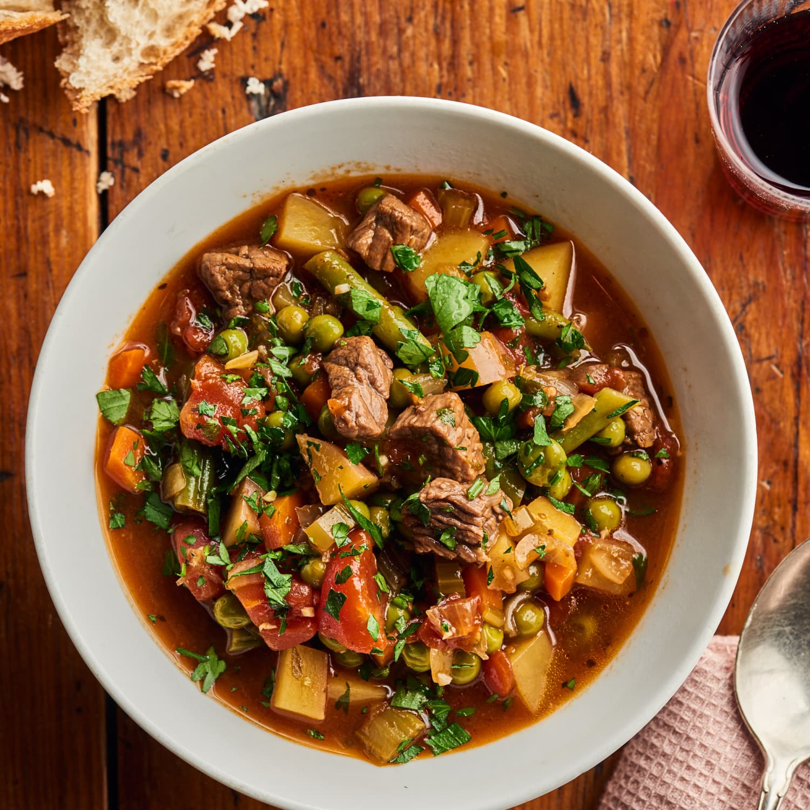

Beaf Soup

Description
Vegetable beef soup made with hearty pieces browned beef and a smart mix of fresh and frozen vegetables.
Ingredients
- 1 1/2 pounds beef stew meat
- 3 teaspoons kosher salt, divided, plus more as needed
- 1/4 teaspoon freshly ground black pepper
- 1 pound red potatoes
- 1 large yellow onion
- 2 medium carrots
- 2 stalks celery
Steps
Here's a brief overview of what you can expect when you make this easy Beaf Soup:
- Cut and season the beef stew meat.
- Prepare the vegetables.
- Brown the meat.
- Add the potatoes, tomatoes, and broth.
- Simmer for 20 to 30 minutes.